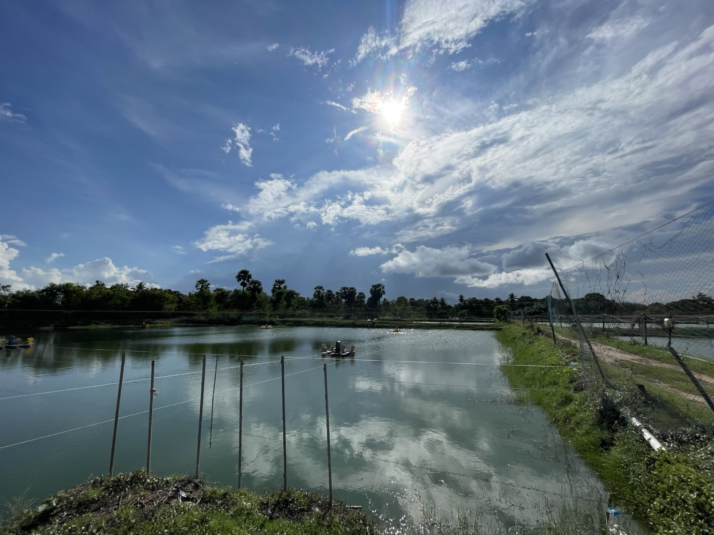
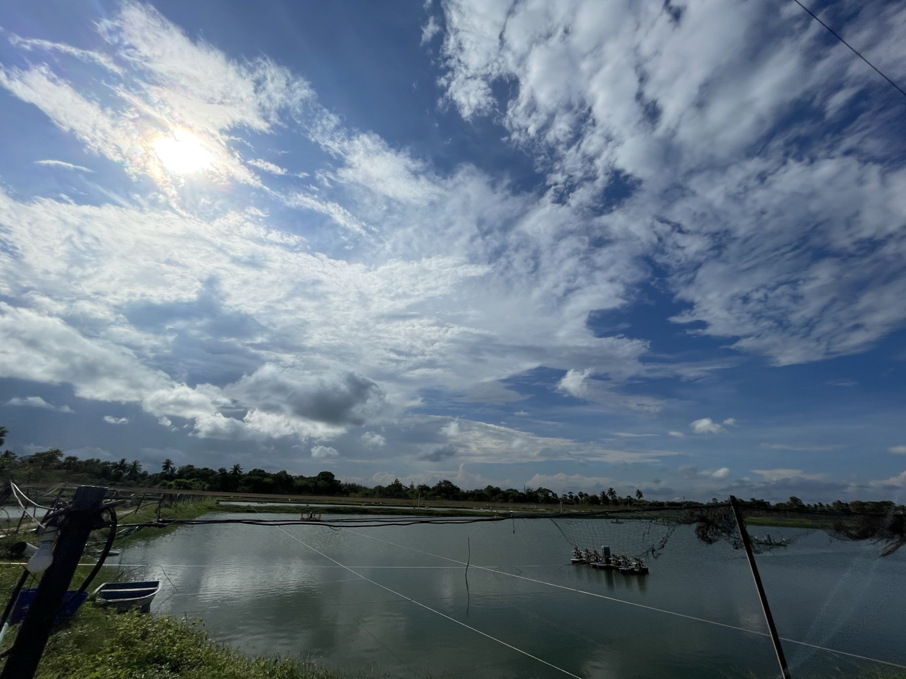
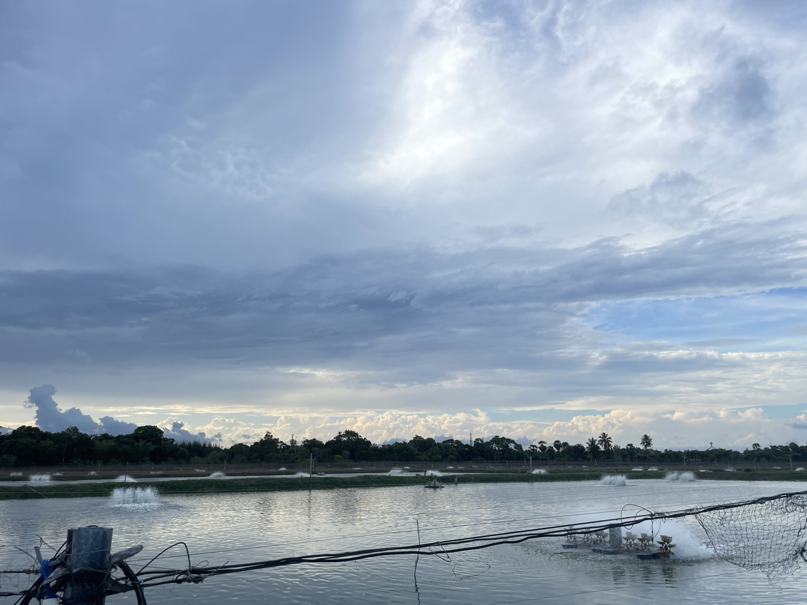
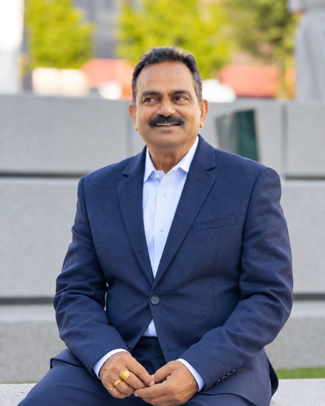
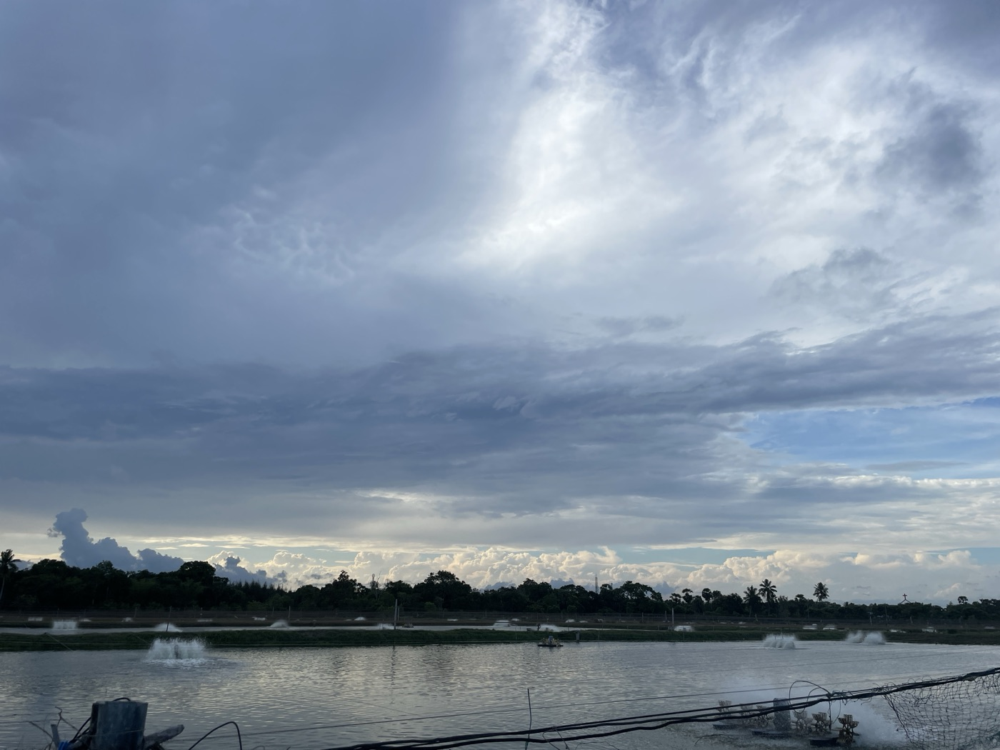
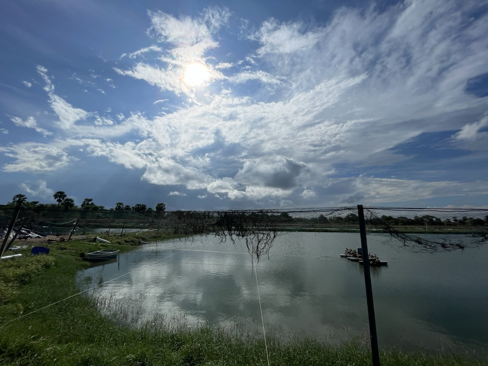
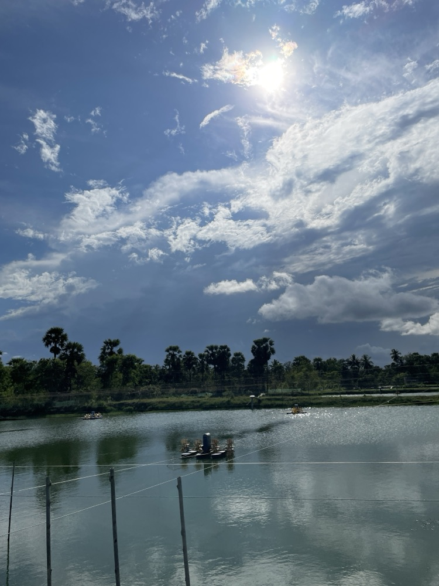
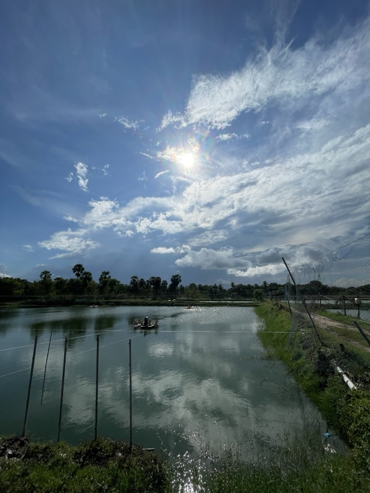
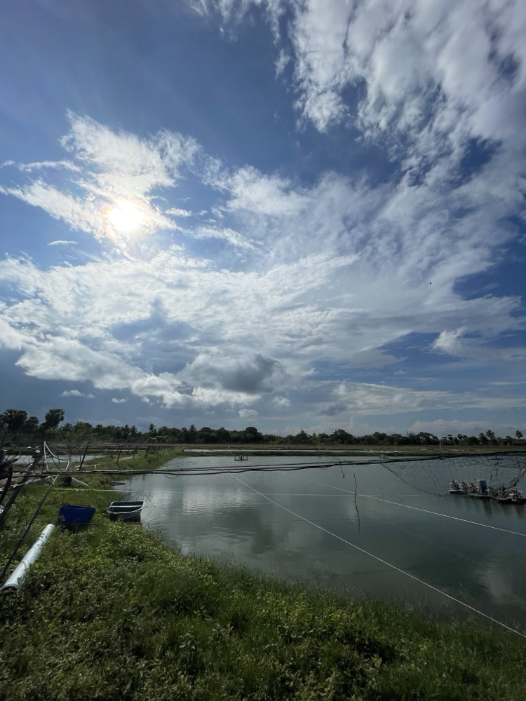
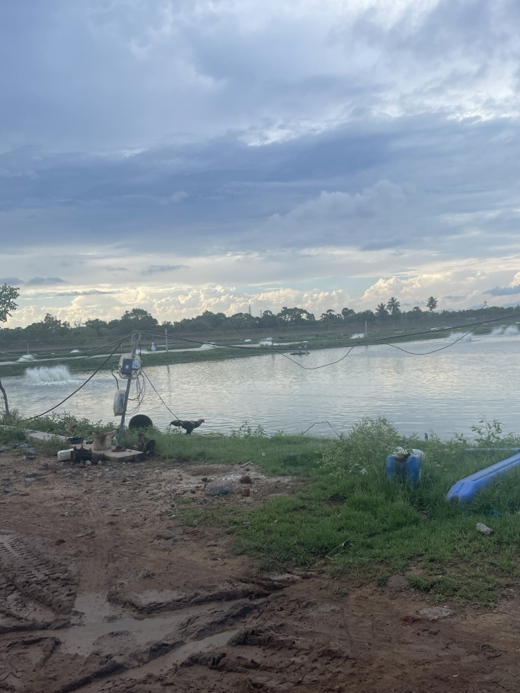

Pond preparation
Between crops, ponds are dried, levelled and limed, and the bunds repaired. Giving the soil a proper rest is the cheapest disease control there is.

Gurajanapalli, Andhra Pradesh
Shrimp raised slowly and carefully in open ponds - under a certification standard that checks the food, the water and the people behind it.
The Farm
CPR Aqua Farms sits on 72 acres at Gurajanapalli, in the coastal belt of Andhra Pradesh - a stretch of land that has grown shrimp for as long as India has exported it.
The first ponds here were dug in 1989. What followed was the ordinary story of Indian aquaculture: good years, hard years, disease cycles, and long stretches where the sensible thing was to wait. In 2016 the farm was rebuilt from the bund up - ponds reshaped, aeration reworked, water management rethought - and it has run continuously since.
Staying in one place for that long teaches you things a new site cannot buy. We know how this soil holds water, which ponds turn first after a monsoon, and how long the water needs to rest between crops. Most of the decisions made here are made on the bund, by people who have walked it for years.


Visionary Founder

With more than 36 years in aquaculture, Prabhakar Rao has built his expertise through years of working directly with ponds, water, soil and shrimp - learning from every season and refining the way each crop is managed.
His approach is rooted in observation and experience - a deep understanding of pond behaviour, water conditions, soil preparation, stocking, feeding, aeration and crop health, along with the small changes that make a significant difference over the course of a crop.
What distinguishes his approach is not a single farming formula, but the ability to read the pond, understand changing conditions and respond at the right time. Every crop brings different water, weather and biological conditions, and his experience lies in recognising those changes early and adjusting accordingly.
His vision for CPR Aqua Farms is to build on that experience - combining proven knowledge with improved techniques, responsible resource management and continuous refinement, to produce healthy shrimp and maintain the long-term health of the farm.
“నీరు తనకు కావలసినది చెబుతుంది. వినడానికి మీరు అక్కడ ఉంటే చాలు.” “The water tells you what it needs. You only have to be there to hear it.” - CPR · Founder

Every pond is read, every evening.
How We Farm
Nothing here is novel. It is the standard way to run a pond well, done consistently - which turns out to be the hard part.
Between crops, ponds are dried, levelled and limed, and the bunds repaired. Giving the soil a proper rest is the cheapest disease control there is.
Paddlewheels run to hold dissolved oxygen through the night, and water quality is checked on a fixed schedule rather than when something looks wrong.
Post-larvae are sourced from tested hatcheries and stocked at densities the pond can carry. Feed is tracked against growth, so the pond is fed to appetite, not to schedule.
Every pond keeps its own record - stocking, feed, treatments, water readings and harvest. Those records are what makes a crop traceable, and what audits are built on.
Certification
BAP certification is an independent audit of the whole operation, not a label bought for the box. Holding it means the farm is assessed against a written standard and re-checked to keep it.
From Above
Gallery





Location
Visits are welcome by arrangement - the ponds are best seen early in the morning or an hour before sunset.
Get in touch
Whether you are looking at a harvest, comparing farms, or simply curious about how this stretch of water is worked, write to us and we will answer properly.